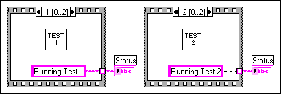
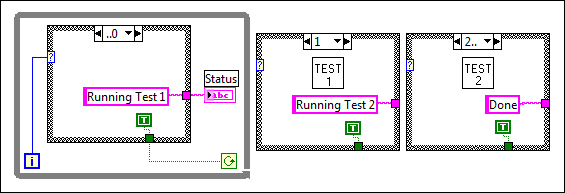

Sequence structures guarantee the order of execution and prohibit parallel operations. For example, asynchronous tasks that use I/O devices, such as PXI, GPIB, serial ports, and DAQ devices, can run concurrently with other operations if sequence structures do not prevent them from doing so.
In these cases, you may need to take advantage of the inherent parallelism in LabVIEW. Avoid overusing sequence structures in one of the following ways:
When you need to control the execution order, consider establishing data dependency between nodes. For example, you can use flow-through parameters such as error I/O to control the execution order.
Use a Case structure and a While Loop. You cannot update an indicator from multiple frames of the sequence structure, as shown in the following illustration.

In the previous block diagram, a VI used in a test application has a Status indicator that displays the name of the current test in progress. If each test is a subVI called from a different frame, you cannot update the indicator from each frame, as shown by the broken wire in the Stacked Sequence structure. Because all frames of a Stacked Sequence structure execute before any data passes out of the structure, only one frame can assign a value to the Status indicator.
Instead, use a Case structure and a While Loop, as shown in the following block diagram.

Each case in the Case structure is equivalent to a sequence structure frame. Each iteration of the While Loop executes the next case. The Status indicator displays the status of the VI for each case. Because data passes out of the structure after each case executes, the Status indicator is updated in the case before the one that calls the corresponding subVI.
Unlike a sequence structure, a Case structure can pass data to end the While Loop during any case. For example, if an error occurs while running the first test, the Case structure can pass FALSE to the conditional terminal to end the loop. However, a sequence structure must execute all its frames even if an error occurs.